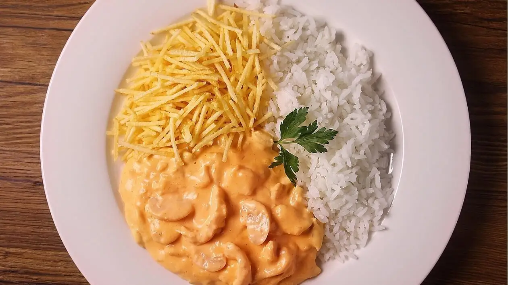

Churrasco

Para fazer um churrasco você escolhe a carne que você quiser e vai precisar de uma churrasqueira, carvão, grelha e não se esqueça de me chamar :)
Strognoff de frango
- 3 peitos de frango cortados em cubos
- 1 dente de alho picado
- sal a gosto
- 1 cebola picada
- 1 colher de manteiga
- 1/3 copo de mostarda
- 1 copo de creme de leite
- batata palha a gosto
- 1 copo de cogumelos
- 1/2 copo de ketchup
- 2 colheres (sopa) de maionese
- pimenta-do-reino a gosto
- 1 dente de alho picado